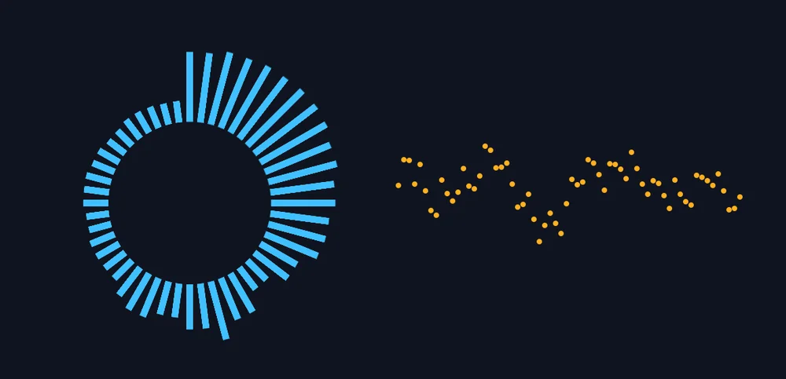

Tutorials
A sound visualizer
Make bars that dance to music with the Audio Spectrum behavior, and a line that ripples with the sound wave with Audio Waveform.
This page is also a lesson inside Phoenix: choose and start A sound visualizer, and Phoenix points at each control as you go. It takes about 6 minutes.
To follow along here instead, download the starting document, sound-visualizer.fla, and open it with .

Two behaviors turn the sound in a scene into motion. Audio Spectrum makes a row or ring of bars, low notes to high, each growing with how loud its notes are. Audio Waveform draws the sound wave itself, like an oscilloscope.
The Music layer holds four seconds of music. On the Visuals layer are a blue bar, with its registration point at its bottom, and an orange dot.
1. Play it
Turn your sound up, then press Enter, or click the play button in the timeline header. You hear drums, a bass and a little tune; nothing moves yet.
2. Select the bar
Press Enter again to stop. Press V for the Selection tool and click the blue bar on the left.
3. Open the Behaviors panel
Choose Window > Behaviors if it is not showing. It lists what is on the selection and the settings of each.
4. Add Audio Spectrum
Click Add Behavior and choose Audio Spectrum. The bar becomes a row of 32 bars: low notes on the left, high notes on the right.
5. Play it
Press Enter, or click the play button in the timeline header. The bars jump with the music: the kick drum and bass on the left, the tune in the middle, the hi-hats to the right.
They follow the sound while you edit too: step through the frames and the bars change on each.
6. Round a circle
Press Enter again to stop. Set Laid out to Circle. The bars now stand round a ring, pointing outward, with the low notes at the top.
7. More bars
Set Bars to 48 to fill the ring more closely.
8. A softer fall
Fall off is how many frames a bar takes to drop back after a peak. Set it to 8 for a smooth, floaty look, or to 0 for a sharp, jumpy one. Play again to see the difference.
9. Select the dot
Press Enter to stop if it is playing, then click the orange dot on the right.
10. Add Audio Waveform
Click Add Behavior and choose Audio Waveform. The dot becomes a line of 64 dots, each moved up or down by the sound wave on this frame.
11. Play it
Press Enter, or click the play button in the timeline header. The ring of bars pulses and the line of dots wriggles, both in time with the music.
What you did
You made a sound visualizer with two instances and two behaviors. They follow any sound in the scene, so import your own song, put it on a layer, and they dance to it.
Try Grow set to Fade for bars that glow instead of growing, Height on the waveform for a bigger wave, or Laid out set to Circle on the waveform too, inside the ring.
For everything this tutorial touches on, see Behaviors.